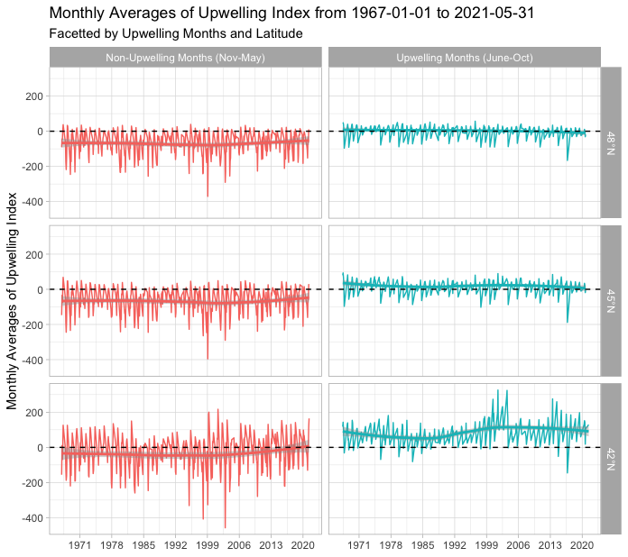
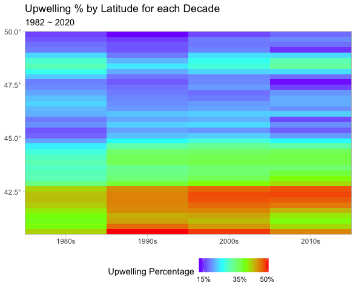
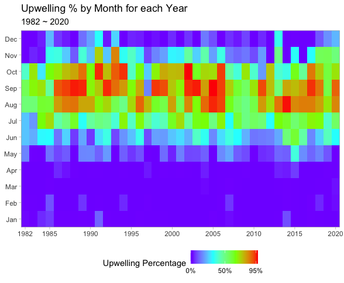
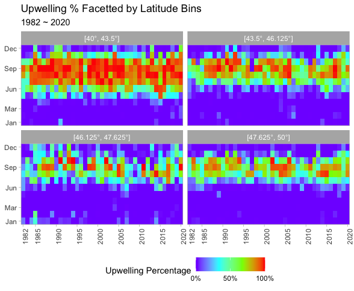
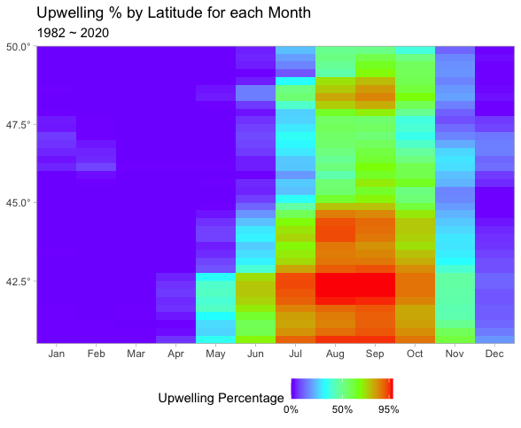
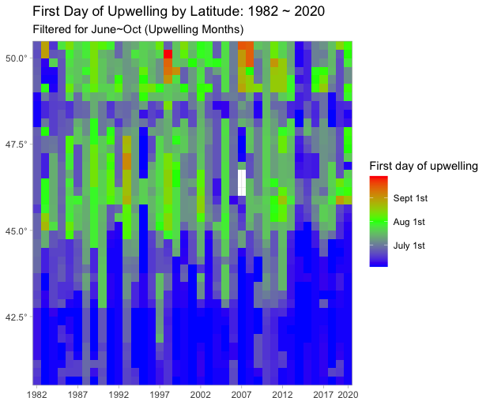
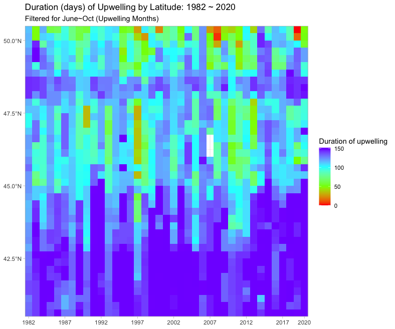
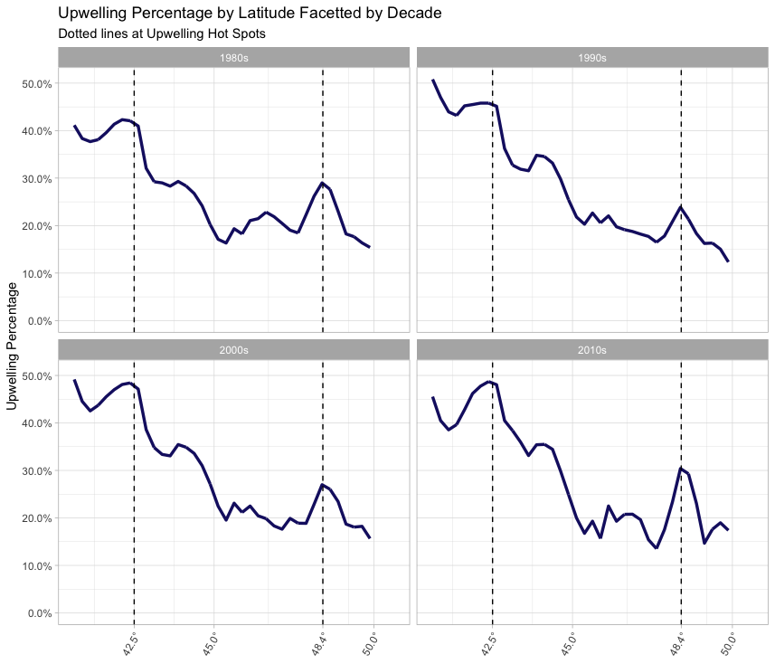
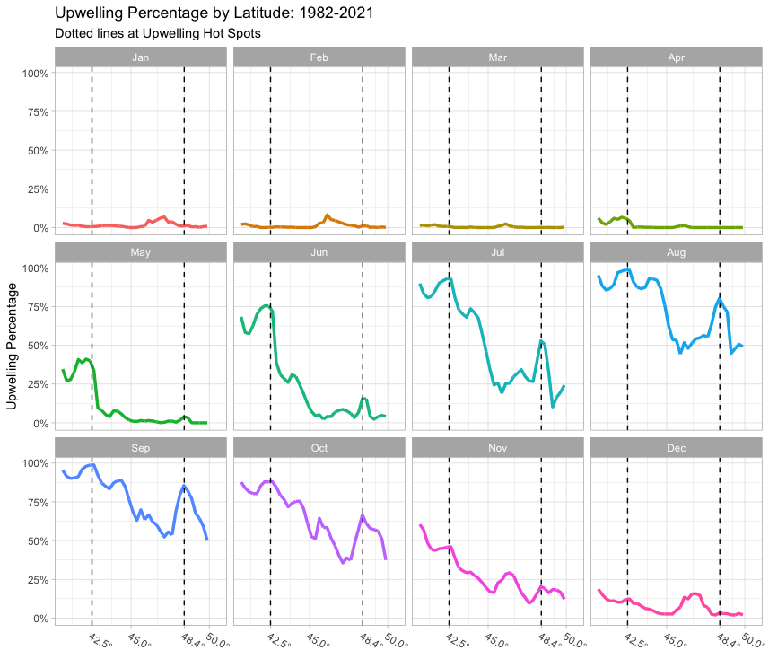
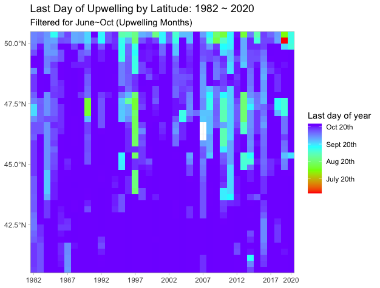

1 Introduction
The National Oceanic and Atmospheric Administration (NOAA) defines upwelling as “a process in which deep, cold water rises toward the surface”. It is initiated by wind blowing parallel to the coastline and moving warm water offshore, perpendicular to its direction. As surface water moves offshore, deeper, colder, and nutrient rich water rises up from deep sea level and replaces the warm water. “The upward movement of this deep, colder water is called upwelling” (NOAA Ocean Explorer).

Figure 1: Illustration of Upwelling. As surface winds blow towards the equator, they push warm coastal water away from the coast, which brings in deeper, colder, nutrient rich water from beneath the surface to replace the warm water.
Upwelling brings nutrient rich water to the surface and supplies nutrition necessary for biological productivity. “Coastal upwelling ecosystems like the U.S. west coast are some of the most productive ecosystems in the world and support many of the world’s most important fisheries. Although coastal upwelling regions account for only one percent of the ocean surface, they contribute roughly 50 percent of the world’s fisheries landings” (NOAA Ocean Explorer).
Literature on upwelling highlight changes in upwelling patterns. Bograd et al. (2009) discovered “a trend towards a later and shorter upwelling season in the northern CCLME (California Current large marine ecosystem)”. They also assert that there is “significant interannual variability in upwelling characteristics”. The spring upwelling began later, resulting in a shorter upwelling season. Studying upwelling is useful for “resource managers tasked with assessing future changes in commercially important fish and protected species populations”.
Xiu et al. (2018) looked at the effect of global warming on coastal upwelling systems. They state, “global warming will enhance land–sea temperature gradients that in turn will increase upwelling favorable winds (i.e., the Bakun hypothesis)”. Experts predict “increased upwelling intensity and duration at higher latitudes”. This will affect global fish supply as change in upwelling is a driving factor of change in marine ecosystems.
2 Purpose
We introduce a simple, but highly effective algorithm for detecting upwelling: an automatic detection method using satellite image data from NOAA. This method identifies the upwelling hotspots, months of strong upwelling, and the duration of upwelling. This will allow marine scientists and researchers to prepare for the effect of global warming on upwelling systems.
3 Data
The dataset, Daily Optimum Interpolation (OI) SST, comes from NOAA’s data server, ERDDAP. It contains four columns: time, latitude, longitude, and SST (sea surface temperature). SST is defined as the water temperature close to the ocean’s surface.

Figure 2: NOAA satellite image showing sea surface temperature (SST) in Celsius off the coast of Vancouver Island and Washington. Red is high temperature (~18°C), green is medium temperature (~15°C) and blue/purple is low temperature (~13°C)
As seen in Figure 2, we chose to focus on latitudes [42.625°N, 52.125°N] and longitudes [229.875°W, 236.625°W] because this area avoids the Alaska current to the north and the California current to the south. Also, the east boundary crops out land, which will save memory. This area corresponds to the coast of Vancouver Island (British Columbia) and Washington.
4 Automatic Detection Method
Gidhagen (1987) first uses an automatic method to define upwelling: “Upwelling was proved if an in situ measurement showed an abnormal temperature drop of at least 2°C compared to earlier and surrounding measurements”. Using this method, he found that September is a month of strong upwelling in the Swedish coastline of the Baltic Sea. “The increased rate of upwelling in September is not due to a higher number of upwellings, but rather to a longer duration”. Overall, he found “there is a strong year-to-year variation in the rate of upwellings”.
Lehmann, Myrberg, and Höflich (2012) discusses the automatic detection method: “Upwelling was detected by calculating the temperature difference for each individual pixel from the zonal mean temperature, for every pixel line.” The authors tested two temperature thresholds (2°C and 3.5°C), both of which yielded “erroneous upwelling areas detected far offshore”. Thus, they registered upwelling if it occurred within 28 km of the coast.
Drawing inspiration from past work, we created a custom automatic detection method to algorithmically determine when and where upwelling occurs. The algorithm looks at each latitude and finds the SST of the coastal water (water closest to land) and the SST of water 2 and 3 degrees away from land (SST coast 2 and SST coast 3). Then, it computes two differences: the difference in SST between the coastal water and SST coast 2 and the difference in SST between the coastal water and SST coast 3. It checks if either of these two differences exceeds a threshold of 2.5°C. If it does, we indicate upwelling at the specific latitude. If not, we indicate non-upwelling.

Figure 3: Stamen map showing upwelling locations off the coast of Vancouver Island and Washington. Red dots are placed at latitudes where we detected upwelling. Blue dots are placed 2 and 3 degrees away from the red dots.
As seen in Figure 3, the automatic detection method accurately portrays the location of upwelling along the coast. It corresponds well with visually looking at the SST and finding locations where the color of the SST on the coast is blue and the color of the SST on offshore waters is red. In a later section, Section 5.0.2, we will illustrate the changes in the timing and length of upwelling season from 1982 to 2020.
5 Results
5.0.1 Relationship of the Automatic Detection Method with the Ekman Upwelling Index
The automatic detection method gives us an indicator of upwelling at a certain latitude. This allows us to perform logistic regression to examine the relationship between a predictor and the upwelling indicator.
We merged our dataset with data on the daily averages of Ekman upwelling index data at three different latitudes: 42°N, 45°N, and 48°N. This data comes from the Environmental Research Division at NOAA Fisheries - Southwest Fisheries Science Center. The Ekman upwelling index is an index of the strength of upwelling along the coast and is calculated using wind dynamics. Positive values indicate upwelling and negative values non-upwelling.

Figure 4 : Line plot of monthly averages of Ekman upwelling index on the y-axis and year on the x-axis facetted by latitude (42°N, 45°N and 48°N) and upwelling months (June ~ Oct / Nov ~ May).
Above is a line plot of the monthly averages of Ekman upwelling index facetted by upwelling months and latitude. Upwelling months are from June to October, months known to have strong upwelling patterns. Non-upwelling months are from November to May. We observe the trend line in the non-upwelling months to be well below zero and the trend line in the upwelling months to be well above zero. This demonstrates that the upwelling index is appropriate for detecting upwelling. Below, we further examine the relationship between the upwelling labels from the automatic detection method and the upwelling index with logistic regression.

Figure 5: Logistic curve of upwelling indicator variable on the y-axis and daily average of Ekman upwelling index on the x-axis at three latitudes: 42°N, 45°N, and 48°N. Also shown is histogram of the distribution of the upwelling index at upwelling (1) and non-upwelling (0).
Above is a logistic curve drawn on a plot of the upwelling indicator variable and daily average of Ekman upwelling index. As we go from 42°N to 45°N and from 45°N to 48°N, there seem to be less and less positive upwelling indexes at y = 1. In other words, at higher latitudes, there is less of a correlation between Ekman upwelling index and the automatic detection method. When we ran a logistic regression on two predictors, Ekman upwelling index and latitude, we observed that daily average of upwelling index has a statistically significant, positive relationship with the binary variable of upwelling (0/1).
5.0.2 Exploration of Upwelling Percentage
Upwelling percentage: Proportion of days over relevant timeframe in a figure that are categorized as upwelling by our automatic detection method.

Figure 6: Heatmap of upwelling percentage over four decades. Red means high upwelling percentage (~50%) , blue means low upwelling percentage (~15%), and green is the average upwelling percentage (~35%). The 2020s has been omitted for lack of data.
Overall, low latitudes have higher upwelling percentage than high latitudes. Over the four decades, upwelling percentage is highest (~50%) at 40.0°N ~ 42.5°N. Then, it decreases to around 35% at 42.5°N ~ 45.0°N. Above this latitude, upwelling percentage decreases to 15% at 45.0°N ~ 50.0°N. Notably, in the 1980s and 2010s, upwelling percentage around 35% was observed at the lower latitudes (40°N ~ 42.5°N) and higher latitudes (47.5°N ~ 50.0°N).

Figure 7: Heatmap of the proportion of upwelling days in each month from 1982 to 2020. Red means high upwelling percentage (~95%) , blue means low upwelling percentage (~0%), and green is the average upwelling percentage (~50%).
This plot illustrates a a fairly consistent pattern of high upwelling percentage from June to October. There is extremely high upwelling percentage (~95%) in August, September, and October. On the other hand, there is low upwelling percentage (~0%) from November to May. This shows the upwelling months (upwelling percentage higher than 25%), to be from June to October and the non-upwelling months (upwelling percentage lower than 25%) from November to May.

Figure 8: Heatmap of upwelling percentage facetted by latitude bins from 1982 to 2020. Red means high upwelling percentage (~95%) , blue means low upwelling percentage (~0%), and green is the average upwelling percentage (~50%). This plot segments the previous plot into four latitude bins: [40°N, 43.5°N], [43.5°N, 46.126°N], [46.125°N, 47.625°N], and [47.625°N, 50°N].
Overall, there is extremely high upwelling percentages (~95%) during the upwelling months at the 40°N ~ 43.5°N latitude bin and lower upwelling percentages as latitude increases. In the northern latitudes, there are some years with high upwelling percentage, but they are not as common as in the southern latitudes.

Figure 9: Heatmap of upwelling percentage by latitude and month from 1982 to 2020. Red means high upwelling percentage (~95%) , blue means low upwelling percentage (~0%), and green is the average upwelling percentage (~50%).
This plot confirms the above findings of a consistent upwelling pattern from June to October and higher upwelling percentages in the lower latitudes (40°N ~ 45°N). Interestingly, there is a glimmer of high upwelling percentage around 48.0°N from August to September. This latitude is same as the latitude where in the 1980s and 2010s, upwelling percentage was observed to be around 35%.
5.0.3 Changes in Upwelling Phenology and Duration

Figure 10: Heatmap showing the first day of upwelling off the coast of Vancouver Island and Washington. Red squares signify later upwelling days (late September) and blue squares earlier days (June). White squares indicate missing values. Heatmap showing the last day of upwelling is placed in the Appendix since it shows no clear pattern.
The plot above shows that the first day suggesting a coastal upwelling process by our automatic detection method was from June to October. Overall, upwelling started later for the northern latitudes (45.0°N ~ 50.0°N) than the southern latitudes (40.0°N ~ 45.0°N). There is a band of latitudes around the late 1990s and late 2000s when the first day of upwelling was late September. Also, around 48.0°N, the first day of upwelling is much earlier (June) than the surrounding latitudes, where the first day of upwelling was in August.

Figure 11: Heatmap showing the duration of upwelling off the coast of Vancouver Island and Washington. Red squares indicate short upwelling duration (~10 days) and blue squares long upwelling duration (~150 days). White squares indicate missing values.
Overall, southern latitudes (40.0°N ~ 45.0°N) show longer duration of upwelling. This is natural since the previous plot showed that in the southern latitudes, upwelling started earlier than the northern latitudes. There are some northern latitudes with short duration of upwelling. Around 50.0°N and 47.5°N, the duration of upwelling is shorter than its surrounding latitudes. In 1997, a shorter duration of upwelling was observed at 45.0°N ~ 47.5°N than surrounding years.
5.1 Discussion
Our automatic detection method mainly draws inspiration from Gidhagen (1987). Gidhagen determined a coastal upwelling process with “an abnormal temperature drop of at least 2°C compared to earlier and surrounding measurements”. This revealed that in the Baltic Sea, the range of the temperature drop for upwelling events is 2-10°C and a typical drop is 4-5°C. Our method uses a threshold of 2.5°C, which is optimal for reducing noise. While Gidhagen compares the current coastal temperature in two dimensions, time and location, we only look at one dimension, comparing the coastal SST to the SST that are 2 and 3 degrees away.
Eleven years later, Naidu, Ramesh Kumar, and Ramesh Babu (1999) studied monsoonal upwelling along the west and east coasts of India using monthly mean local temperature anomaly (LTA). LTA is defined as the diffference between coastal and mid-ocean sea surface temperatures (SST). Specifically, they calculate two LTAs, one on the west coast (\(LTA_W\)) and another on the east coast (\(LTA_E\)).
\[\begin{align} LTA_W &= T_{64}-T_{\text{west coast}} \text{(along the same latitude belt)} \\ LTA_E &= T_{90}-T_{\text{east coast}} \text{(along the same latitude belt)} \end{align}\]
In the Arabian Sea, they used “64°E (\(T_{64}\)) for representing the mid-ocean conditions whereas for the Bay of Bengal we used the 90°E (\(T_{90}\)) for the open ocean conditions”. Positive LTA values indicate coastal upwelling process.
Ten years later, Smitha et al. (2008) also used LTA as an upwelling index.
LTA is calculated as
\[\begin{align} LTA_{wc} &= T_{lon - 3}-T_{\text{lon}} \text{(along the south-west coast)} \\ LTA_{kk} &= T_{lat - 3}-T_{\text{lat}} \text{(Off Kanyakumari)} \end{align}\]
\(T_{\text{lat}}\) and \(T_{\text{lon}}\) refer to the coastal stations between 8.5° - 14.5° N and 76.5° - 78.5°E and \(T_{lon - 3}\) and \(T_{\text{lat} - 3}\) refer to SST 333 km from the coast. \(LTA_{wc}\) and \(LTA_{kk}\), respectively, represent local temperature along the south-west coast and the Kanyakumari coast. The positive LTA values suggest coastal upwelling process.
Most recently, Holmes et al. (2021) used SST differential to study upwelling in the Southeast Arabian Sea, one of the world’s important seasonal upwelling zones. For their SST data, they used the same source as this blogpost, the Daily Optimum Interpolation (OI), version 2.1 data set by the Group for High Resolution Sea Surface Temperature (GHRSST). “This data set uses Advanced Very High Resolution Radiometer (AVHRR) data, which provides accurate nearshore SST values, and interpolates to fill in gaps in the AVHRR data”. Their upwelling index is “the SST differential between nearshore and 3° longitude offshore, based on Naidu, Ramesh Kumar, and Ramesh Babu (1999) and Smitha et al. (2008).” This index is good for measuring “upwelling arising due to both remote-forcing and local wind stress.”
Hickey and Banas (2003) reveals that “In general, the strength and duration of upwelling increases to the south in the PNW”. They define strength of upwelling with wind velocity, whereas we look to upwelling percentage. Figure 8 and Figure 9 clearly confirm this finding as they illustrate upwelling percentage is much higher in the lower latitudes in the PNW, 40.0°N ~ 45.0°N, than the higher latitudes, 45.0°N ~ 50.0°N. In fact, Figure 6 shows that this has been the case over several decades since the 1980s.
Also, they mention that maximum upwelling happens in spring and summer. Our automatic detection method shows that the upwelling months (months with upwelling percentage > 25%) are from June to October. This means upwelling months start later in the summer and end later in the Fall than Hickey and Banas’ assertion.
Finally, Hickey and Banas write, “the duration of coastal upwelling also decreases seasonally towards the north”. Figure 11 illustrates this point, as it shows that duration of upwelling is around 150 days at 40.0°N ~ 45.0°N, and decreases to around 100 days for northern latitudes, 45.0°N ~ 50.0°N.
Bograd et al. (2009) develop a set of indexes to understand the coastal upwelling in the California Current large marine ecosystem (CCLME). They found that coastal upwelling gets “progressively shorter with northward latitude”. In Table 1, they show that the mean duration of upwelling is 357 days at 33.0°N, 320 days at 36°N, 223 days at 42°N, and 151 days at 48°N. This finding agrees with our Figure 11, which shows northern latitudes with shorter duration of upwelling. One difference is Bograd et al only looked at data up to 2007, whereas our dataset looks up to 2020.
6 Conclusion
Upwelling is the upward movement of deep, cold water caused by wind blowing parallel to the coastline. We designed a custom automatic detection method using SST differential to accurately identify when and where upwelling occurs. We discovered that monthly averages of Ekman upwelling index has a statistically significant relationship with the upwelling indicator, which were determined by our automatic detection method.
Using these indicators, we calculated the upwelling percentage, the proportion of days over relevant timeframe in a figure that are categorized as upwelling by our automatic detection method. We discovered that southern latitudes (40°N ~ 45°N) had higher upwelling percentages than northern latitudes (45°N ~ 50°N). There was extremely high upwelling percentage, close to 50%, from 40°N to 42.5°N. Also, we found the upwelling months (upwelling percentage higher than 25%) to be from June to October and the non-upwelling months from November to May. High upwelling percentage (~95%) was observed from August to October.
We then looked at the changes in upwelling phenology and focused on the upwelling months. Upwelling started later for northern latitudes (45.0°N to 50.0°N) around August and September. In the southern latitudes, upwelling started around July 1st. Northern latitudes had shorter duration of upwelling than the southern latitudes.
7 Appendix

Figure 12: Lineplots of upwelling percentage over four decades. The 2020s has been omitted for lack of data.

Figure 13: Lineplots of upwelling percentage from 1982 to 2020.

Figure 14: Lineplots of upwelling percentage of each month from 1982 to 2020.

Figure 15: Heatmap showing the last day of upwelling off the coast of Vancouver Island and Washington. Red squares signify later upwelling days (late September) and blue squares earlier days (June). White squares indicate missing values.